NetScaler Management and Analytics System (MAS) 12
Navigation
The newer 12.1 version of NetScaler MAS (aka Citrix ADM, aka Citrix Application Delivery Management) is detailed in a different article.
The older 11.1 version of NetScaler MAS is detailed in a different article.
- Change Log
- Planning
- Import Appliance into vSphere
- IP Configuration and High Availability
- Add Instances
- Virtual Server Licensing
- Enable AppFlow
- Enable Syslog on Instances
- NSroot Password
- Management Certificate
- System Configuration
- System Email Notifications
- Authentication
- Analytics (Insight) Thresholds and Alerts
- Geo Map
- Instance Email Alerts (SNMP Traps)
- Director Integration
- Use NetScaler MAS - HDX Insight, Gateway Insight, Security Insight
- Troubleshooting
- Upgrade NetScaler MAS
:idea: = Recently Updated
Change Log
- 2018 May 27 - added Events Digest section.
- 2018 Mar 4 - in the Licensing section, updated the screenshots for 12.0 build 57.
- 2018 Mar 4 - in the Authentication section, updated the Add Group instructions for 12.0 build 57.
- 2018 Mar 3 - in Import Appliance section, updated screenshots for 12.0 build 57 and vSphere HTML5 UI client.
- 2018 Mar 3 - in Upgrade MAS section, updated screenshots for 12.0 build 57
- 2018 Jan 13 - in Planning section, added link to Citrix's YouTube video Citrix NetScaler MAS: Application visibility and control in the cloud
- 2017 Dec 26 - updated HDX Thresholds section for 12.0 build 56
- Updated all menu screenshots for 12.0 build 56 - black instead of blue
- 2017 Dec 25 - updated Upgrade section for 12.0 build 56
- 2017 Dec 7 - in System Config section, added instructions to disable SSON to instances
Planning
NetScaler MAS is a replacement for NetScaler Insight Center, Command Center, and Control Center. It's a combination of these three different tools.
For an overview of MAS, see Citrix's YouTube video Citrix NetScaler MAS: Application visibility and control in the cloud. 

Cloud vs on-prem - MAS is available both on-premises and as a Cloud Service. For the Cloud Service, you import a MAS Agent appliance to an on-prem hypervisor, or deploy a MAS Agent to AWS or Azure. The MAS Agent is the broker between the Cloud Service and the on-prem (or cloud hosted) NetScaler appliances. For more info on the MAS Cloud Service, see the following:
- Demo: Citrix NetScaler Management and Analytics Service - YouTube video
- Most MAS features are supported in the Cloud Service, but some are missing.
- The Cloud Service uses subscription licensing.
- NetScaler Management and Analytics Service at Citrix Docs
- George Spiers NetScaler Management and Analytics Service
The rest of this article focuses on the on-premises version, but much of it also applies to the Cloud Service.
On-premises MAS Licensing:
- Instance management is free (unlimited). This includes Configuration Jobs, Instance Backups, Network Functions/Reporting. Basically everything in the Networks node is free.
- Analytics and Application monitoring are free for up to 30 Virtual Servers (Load Balancing, NetScaler Gateway, Content Switching, etc.).
- Beyond 30 Virtual Servers, licenses can be purchased in 100 Virtual Server packs. See NetScaler MAS Licensing at Citrix Docs.
- You can control assignment of licenses to Virtual Servers.
MAS version - The version/build of NetScaler MAS must be the same or newer than the version/build of the NetScaler appliances being monitored.
HDX Insight Requirements (AppFlow Analytics for ICA traffic):
- Your NetScaler appliance must be running Enterprise Edition or Platinum Edition.
- NetScaler must be 10.1 or newer.
- HDX Insight works with the following Receivers:
- Receiver for Windows must be 3.4 or newer.
- Receiver for Mac must be 11.8 or newer.
- Receiver for Linux must be 13 or newer.
- Notice no mobile Receivers. See the Citrix Receiver Feature Matrix for the latest details.
- For ICA Session Reliability with AppFlow: NetScaler 10.5 build 54 and newer.
- For ICA Session Reliability, AppFlow, and NetScaler High Availability: NetScaler 11.1 build 49 and newer.
- Internally, when a user clicks an icon from StoreFront, an ICA connection is established directly from Receiver to the VDA, thus bypassing the internal NetScaler. To produce AppFlow statistics, here are some methods of getting ICA traffic to flow through an internal NetScaler:
- Implement NetScaler Gateway ICA Proxy (SSL) internally. However, Single Sign-on (pass-through authentication) does not work through NetScaler Gateway. To use SSL ICA Proxy without authenticating at NetScaler Gateway, see CTX200129 - How to Force Connections through NetScaler Gateway Using Optimal Gateways Feature of StoreFront.
- Route ICA traffic (TCP/UDP 1494 and TCP/UDP 2598) through a NetScaler SNIP, and NetScaler routes it to the VDAs. Citrix Blog Post - How to Deploy NetScaler Insight Center with Policy Based Routing
- NetScaler 11 and newer can proxy ICA traffic through a SOCKS protocol Cache Redirection vServer. Advantages: no need to authenticate at NetScaler Gateway, and no routing changes. See Citrix Blog Post Gathering HDX Insight Analytics for LAN Users with NetScaler Using SOCKS for more information.
- Citrix Docs How NetScaler Insight Center is Deployed in a Network and Enabling HDX Insight Data Collection detail additional ICA routing/proxy considerations – Transparent Mode, NetScaler Gateway Single-Hop and Double-Hop, LAN User Mode (NetScaler as SOCKS Proxy), CloudBridge, Multi-Hop (NetScaler and CloudBridge with connection chaining)
- For ICA round trip time calculations, in a Citrix Policy, enable the following settings:
- ICA > End User Monitoring > ICA Round Trip Calculation
- ICA > End User Monitoring > ICA Round Trip Calculation Interval
- ICA > End User Monitoring > ICA Round Trip Calculation for Idle Connections
- Citrix CTX215130 HDX Insight Diagnostics and Troubleshooting Guide contains the following contents:
- Introduction
- Prerequisites for Configuring HDX Insight
- Troubleshooting
- Issues Related to ICA parsing
- Error Counter details
- Checklist before Contacting Citrix Technical Support
- Information to collect before Contacting Citrix Technical support
- Known Issues
Citrix CTX204274 How ICA RTT is calculated on NetScaler Insight: ICA RTT constitutes the actual application delay. ICA_RTT = 1 + 2 + 3 + 4 +5 +6:
- Client OS introduced delay
- Client to NS introduced network delay (Wan Latency)
- NS introduced delay in processing client to NS traffic (Client Side Device Latency)
- NS introduced delay in processing NS to Server (XA/XD) traffic (Server Side Device Latency)
- NS to Server network delay (DC Latency)
- Server (XA/XD) OS introduced delay (Host Delay)
Import MAS Appliance
You can use either the vSphere Client, or the vSphere Web Client, to import the appliance. In vSphere Client, open the File menu, and click Deploy OVF Template. vSphere Web Client instructions are shown below. 
- Download NetScaler MAS for ESX, and then extract the .zip file.
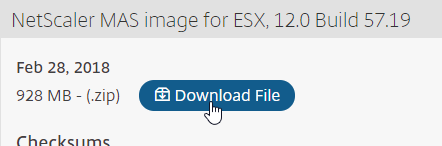
- In vSphere Web Client, right-click a cluster, and click Deploy OVF Template.

- In the Select an OVF Template page, select Local file, and browse to the NetScaler MAS .ovf files. If vCenter 6.5+, select all three files. Click Next.

- In the Select name and folder page, enter a name for the virtual machine, and select an inventory folder. Then click Next.
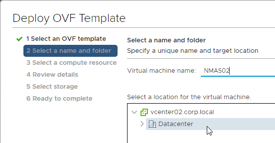
- In the Select a resource page, select a cluster or resource pool, and click Next.

- In the Review details page, click Next.
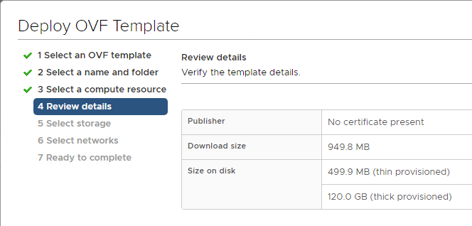
- In the Select storage page, select a datastore. If a single appliance, or if a database appliance, due to high IOPS, SSD or Flash is recommended.
- Change the virtual disk format to Thin Provision. Click Next.

- In the Select networks page, choose a valid port group, and click Finish.

- In the Ready to Complete page, click Finish.
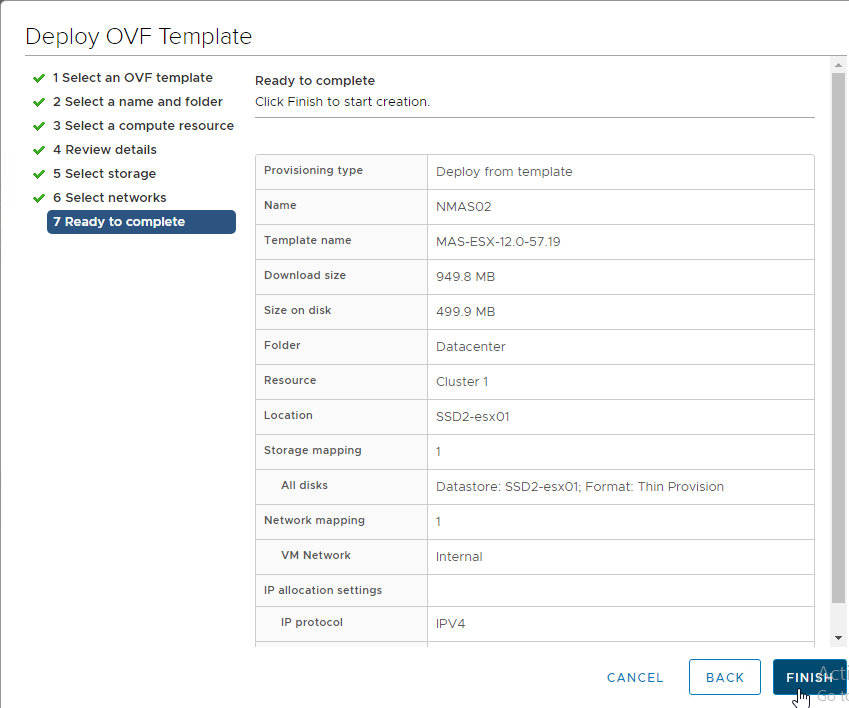
- In vSphere 6.5 and newer, you'll need to upgrade the VM Compatibility.
- Right-click the NetScaler MAS appliance, expand Compatibility, and click Upgrade VM Compatibility.
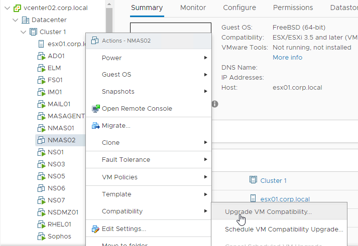
- Click Yes.
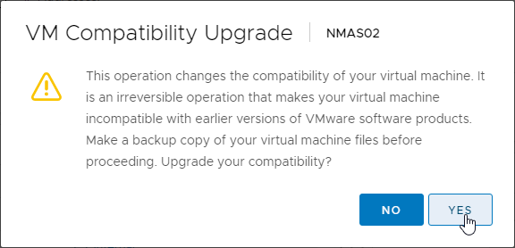
- Select at least hardware version 7 (ESX/ESXi 4.0 and later).
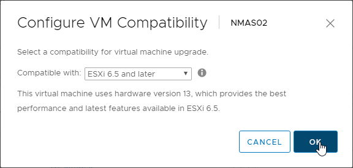
- Right-click the NetScaler MAS appliance, expand Compatibility, and click Upgrade VM Compatibility.
- Before powering on the appliance, you can review its specs.
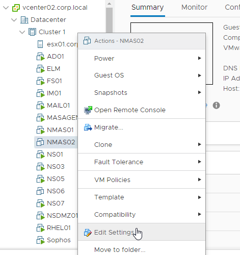
- If you see a message about Invalid guestid in Configinfo, then you'll have to upgrade the VM hardware version first. VM hardware version 4 seems to be too old for vSphere 6.5.
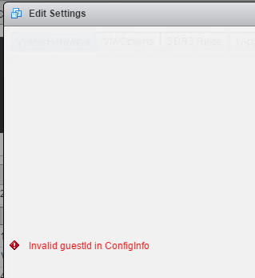
- Now you can review the default specs and increase them. Citrix Docs VMware ESXi Hardware Requirements has recommended specs.
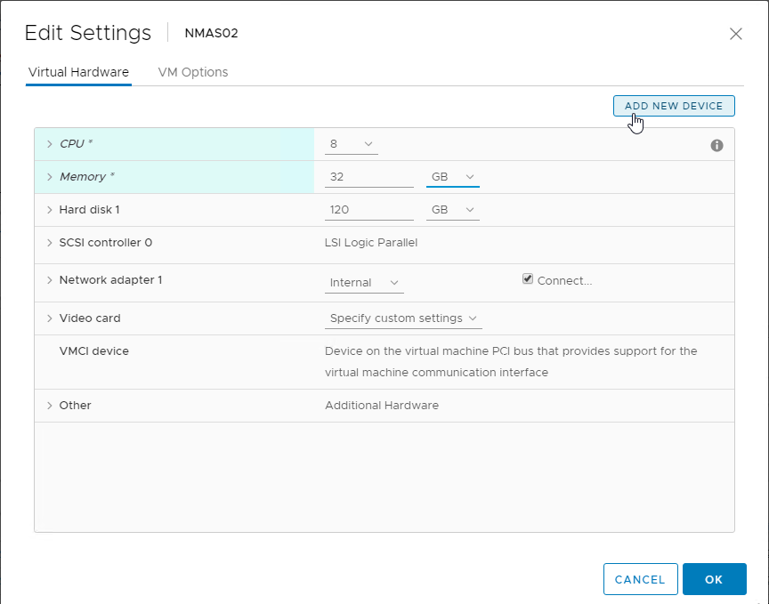
- Citrix Docs How to Attach an Additional Disk to NetScaler MAS: power off appliance, add a second disk that's larger than the first, then power on the appliance. Note: you can only add one disk. Use the MAS storage calculator to determine the recommended size of the disk.
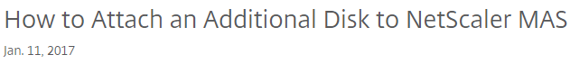
- Enabling more features on MAS means more disk space. MAS features that consume large amounts of disk space include: Web/SSL Insight. SNMP/Syslog/Network Reports have a configurable purge interval.
- Power on the VM if it's not running already.
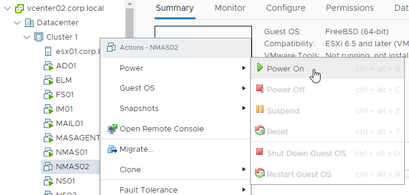
- If you see a message about freeBSD not being supported, then you might have to upgrade the VM Hardware Compatibility Level. VM hardware version 4 seems to be too old for vSphere 6.5.

Appliance IP Configuration and Deployment Modes
- Open the console of the virtual machine.
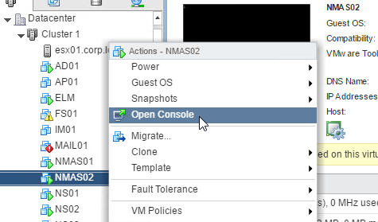
- Configure an IP address.

- Enter 7 when done.

- When prompted for Deployment Type, enter 1 for NetScaler MAS Server. The first appliance must always be NetScaler MAS Server.
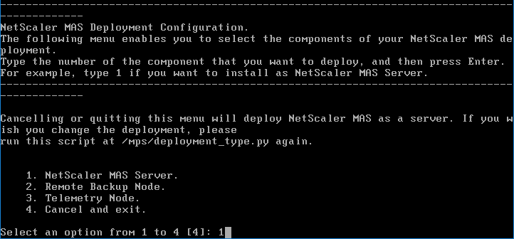
- Other deployment options:
- Notice the option for Remote Backup Node.
MAS High Availability
MAS 12.0 build 51 and newer support active/passive High Availability. Another option is the Remote Backup Node.
- If you want to deploy two NetScaler MAS appliances and HA pair them, enter no for Standalone, and yes for First Server Node.
- Note: HA is only for database redundancy. All other traffic (SNMP, AppFlow) only goes to one node.
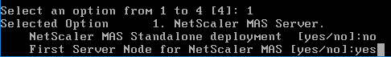
- Note: HA is only for database redundancy. All other traffic (SNMP, AppFlow) only goes to one node.
- Enter Yes to reboot.
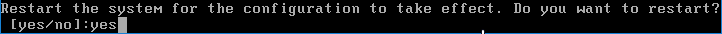
- Deploy another appliance.
- This time, when asked if First Server Node, enter no. You will then be asked for the IP address of the first node. Enter the nsroot password.
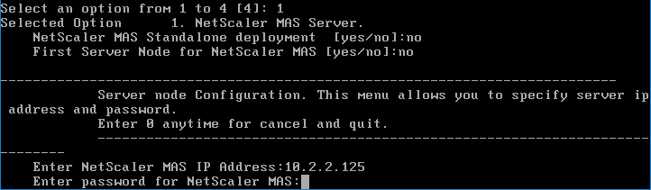
MAS Maintenance
- From CTX220000 How to reboot or shutdown NetScaler MAS using CLI: when using the MAS CLI, do not use the reboot command since it will cause data corruption. Instead, run shutdown -r now.

- If you need to add a static route to NetScaler MAS, then see CTX223282 How to Add a Static Route on NetScaler MAS.

Getting Started
- Once you’ve built all of the nodes, point your browser to the primary NetScaler MAS IP address, and login as nsroot/nsroot.
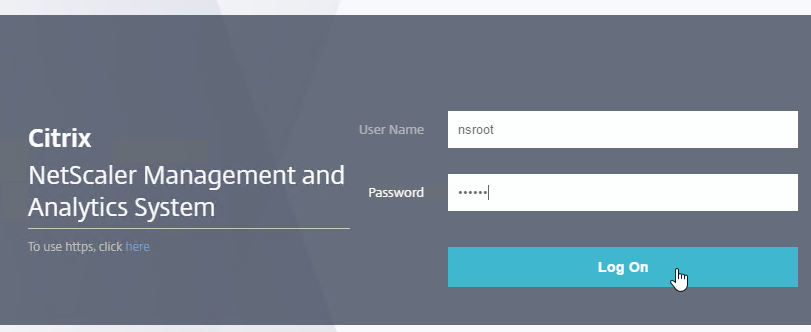
- If you see CUXIP, either Skip or Enable the Customer User Experience Improvement Program.

- Click Get Started

- If you did a standalone deployment, select Single Server Deployment, click Next, and skip to the next section to Add Instances.
- If you deployed high availability appliances, select Two servers deployed in High Availability Mode, and click Next.
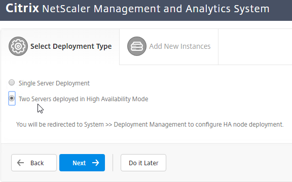
- It should show both nodes. Click Deploy on the top right.
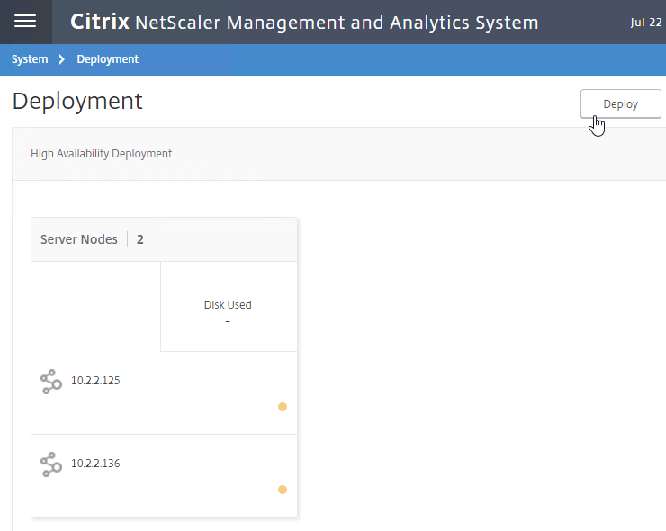
- Click Yes to reboot the appliances.

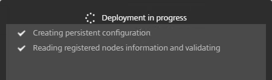
- If you login to one of the appliances, at System > Deployment, you’ll see the performance of each node. Notice the Break HA icon on the top right.
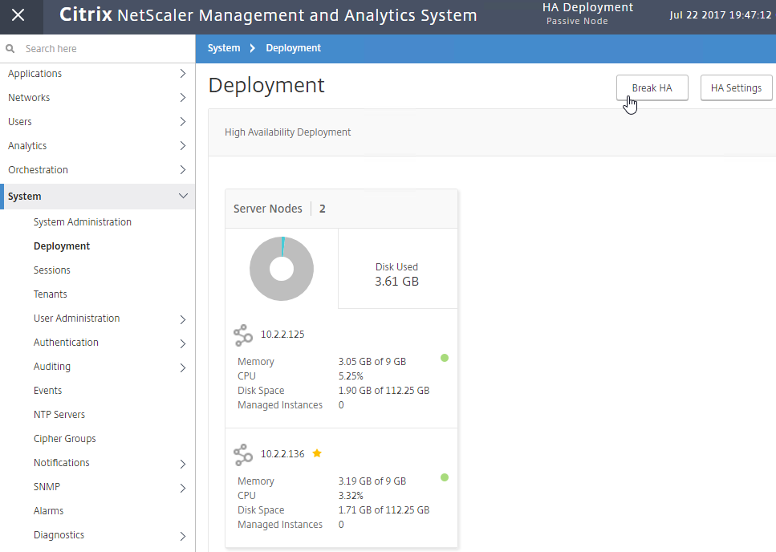

- You can manage the pair by logging in to either node.
- Or you can load balance the pair. Load Balancing is only useful for administration. All other communications (e.g. SNMP, AppFlow) go directly to one of the nodes. See High Availability Deployment at Citrix Docs for load balancing instructions. NetScaler Load Balancing can detect which node is Active and connect you to the Active node.
Add Instances
NetScaler MAS must discover NetScaler instances before they can be managed. Citrix Docs How NetScaler MAS Discovers Instances.
- On the Add New Instances page, click + New near the top right.
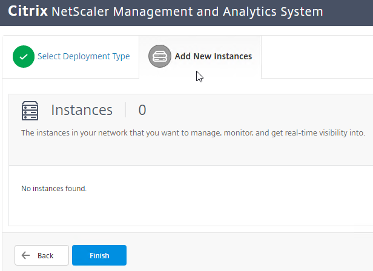

- Enter the NSIP address of a NetScaler appliance.
- Click the pencil next to ns_nsroot_profile.
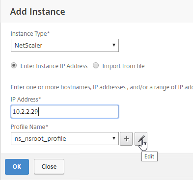
- Check the box next to Do you want to change the password and enter the password for the nsroot account. MAS will use this password to login to the NetScaler instance.
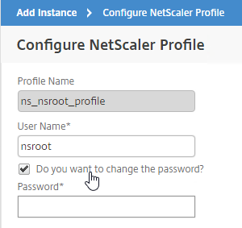
- The NetScaler Profile defaults to using https for instance communication. You can change it by unclicking Use global settings for NetScaler communication.
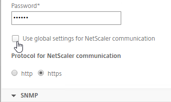
- Enter an SNMP v2 community string or SNMP v3 Security Name that NetScaler MAS will configure on the appliance.
- Click OK.
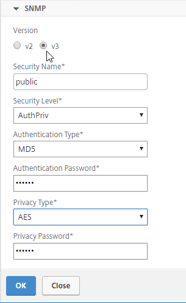
- Then click OK to add the instance.
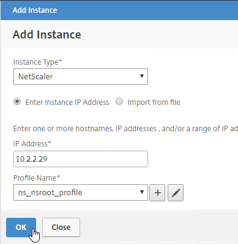
- A progress window will appear.

- You can add more instances, or just click Finish.
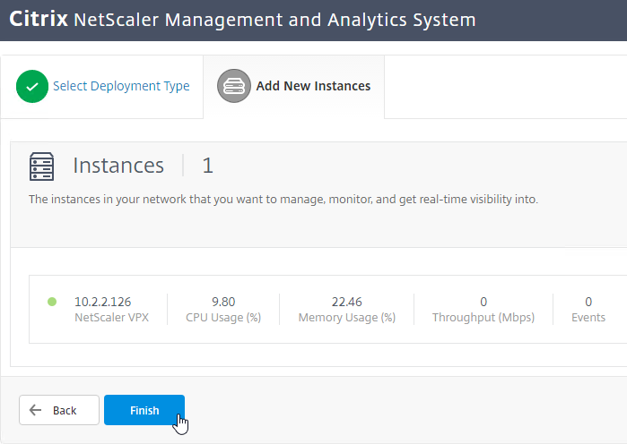
- To add more instances later, click the top left hamburger icon, go to Networks > Instances, select the Instance type, and on the right, click Add.
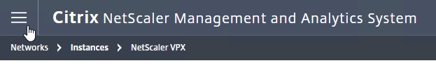
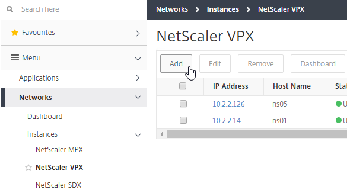
NetScaler SDX
- At Networks > Instances > NetScaler SDX, you can click Add to discover a SDX appliance, and all VPXs on that appliance. You don't have to discover the VPXs separately.
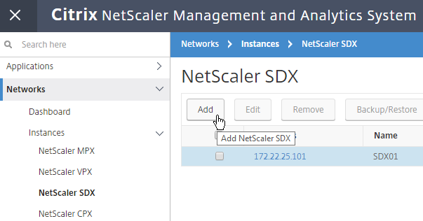
- In the Add NetScaler SDX page, click the pencil icon next to the Profile Name drop-down to edit nssdx_default_profile. Or you can click the plus icon to create a new SDX Profile. Note: SDX profiles are different than VPX profiles.
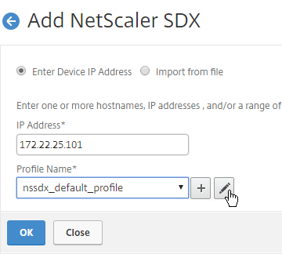
- Enter the credentials for the SDX SVM Management Service.
- For NetScaler Profile, select an admin profile that has nsroot credentials for the VPX instances. If you don't have one in your drop-down list, click the plus icon. Note: You can only select one NetScaler Profile. If each VPX instance has different nsroot credentials, you can fix it after SDX discovery has been performed. The NetProfile Profile is different than the SDX Profile.
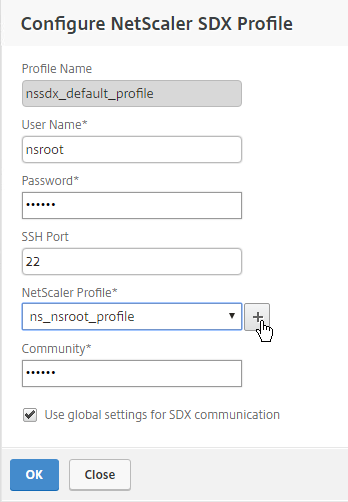
- In the Create NetScaler Profile page, enter the nsroot credentials for the VPX instances, and click Create.
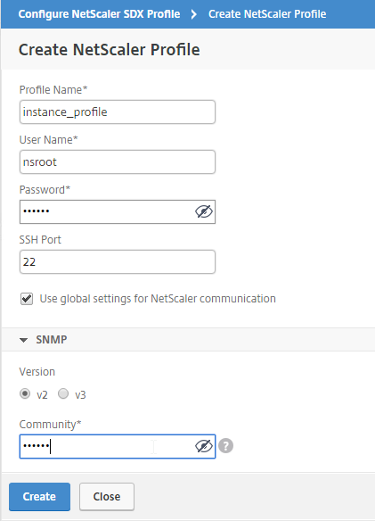
- In the Create NetScaler Profile page, enter the nsroot credentials for the VPX instances, and click Create.
- Back in the Configure NetScaler SDX Profile page, you can uncheck the box for Use global settings for SDX communication, and change the protocol. Click OK when done.
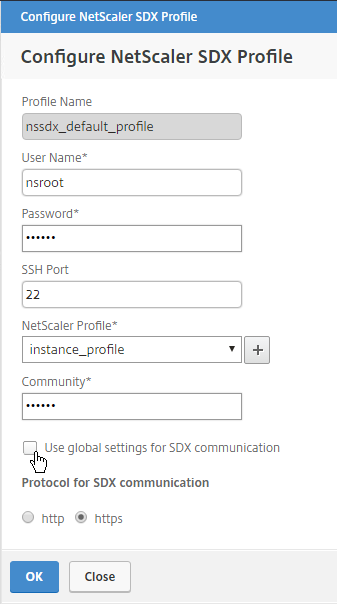
- Back in the Add NetScaler SDX page, click OK to start discovery.
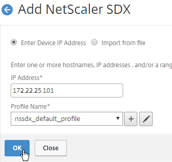
- After discovery is complete, on the left, go to Networks > Instances > NetScaler VPX. You should automatically see the VPX instances.
- To specify the nsroot credentials for a VPX, right-click the VPX, and click Edit.
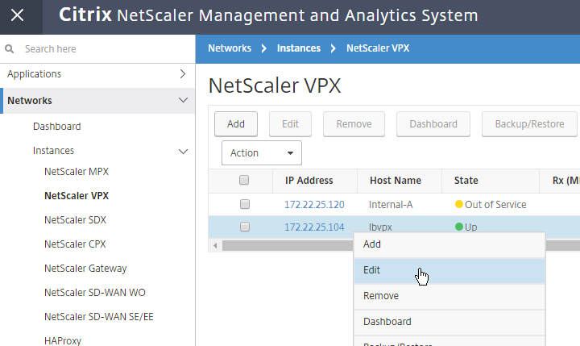
- In the Modify NetScaler VPX page, either select an existing Profile Name, or click the plus icon to create a new one. Click OK when done. It should start rediscovery automatically.
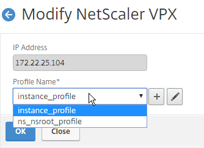
- In the Modify NetScaler VPX page, either select an existing Profile Name, or click the plus icon to create a new one. Click OK when done. It should start rediscovery automatically.
- After fixing the nsroot credentials, right-click the VPX instance, and click Configure SNMP. MAS will configure the VPX to send SNMP Traps to MAS.
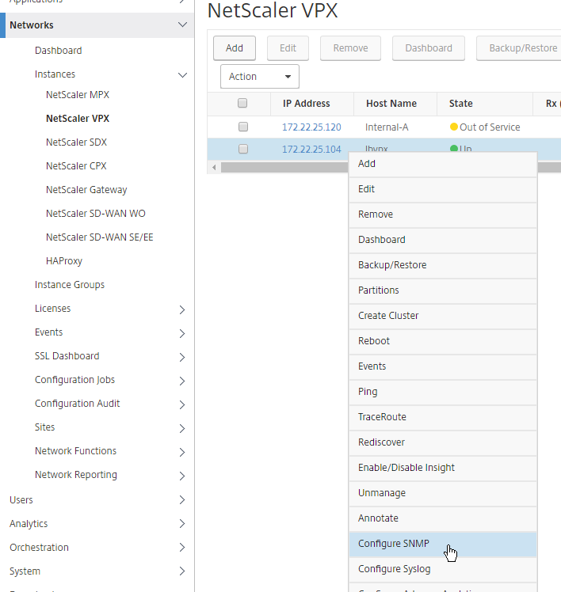
Instance management
- REST API proxy - NetScaler MAS can function as a REST API proxy server for its managed instances. Instead of sending API requests directly to the managed instances, REST API clients can send the API requests to NetScaler MAS. See Citrix CTX228449 NetScaler MAS as an API Proxy Server
- NetScaler VPX Check-In/Check-Out Licensing - You can allocate VPX licenses to NetScaler VPX instances on demand from NetScaler MAS. The Licenses are stored and managed by NetScaler MAS, which has a licensing framework that provides scalable and automated license provisioning. A NetScaler VPX instance can check out the license from the NetScaler MAS when a NetScaler VPX instance is provisioned, or check back in its license to NetScaler MAS when an instance is removed or destroyed. See Citrix CTX228451 NetScaler VPX Check-In/Check-Out Licensing with NMAS
Licenses
Virtual Server License Packs
Without licenses, you can enable analytics features on only 30 Virtual Servers. You can install additional licenses in 100 Virtual Server packs. More info at NetScaler MAS Licensing at Citrix Docs.
- Go to Networks> Licenses > System Licenses to see the number of currently installed licenses, and the number of managed virtual servers.
- By default, Auto-select Virtual Servers is enabled. If you disable this setting, then the Select Virtual Servers button appears.
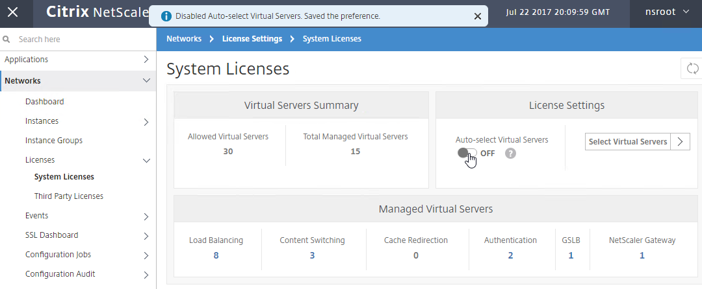
- On the left, go to Networks > Licenses.
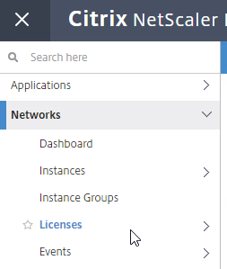
- On the right, notice the Host ID.
- At mycitrix.com, allocate your NetScaler MAS licenses to this Host ID.
- Then use the Browse button to upload the allocated license file.
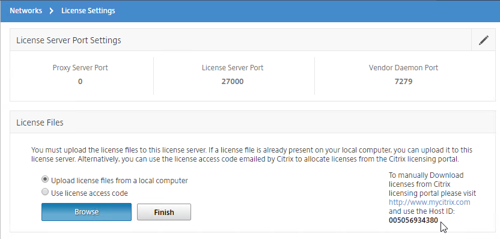
- Click Finish after uploading the license file to apply it.
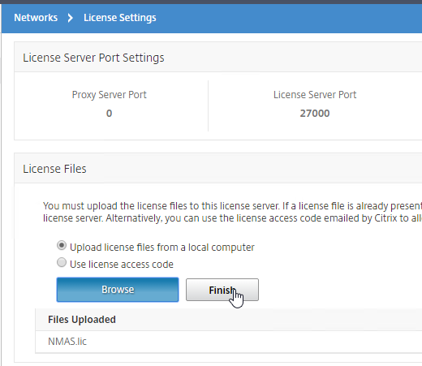
- The License Expiry Information section shows you the number of installed licenses and when they expire.
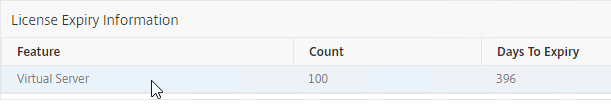
- You can use the Notification Settings section to email you when licenses are almost fully consumed or about to expire.
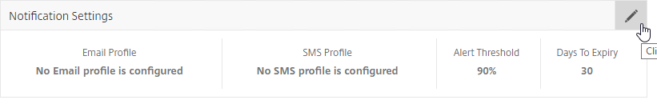

Allocate licenses to Virtual Servers
You can manually unassign a MAS Virtual Server license and reassign it to a different Virtual Server.
- Go to Networks > Licenses > System Licenses to see the number of Allowed Virtual Servers.
- By default, Auto-select Virtual Servers is enabled. If you disable this setting, then the Click to select button appears. Click it.
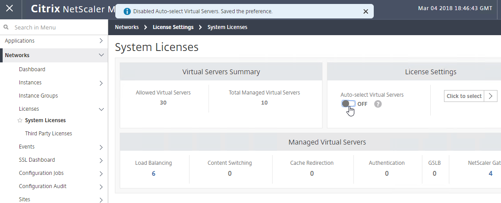
- In the top row, select the type of Virtual Server you want to unlicense or license. Yes, the headings are clickable.
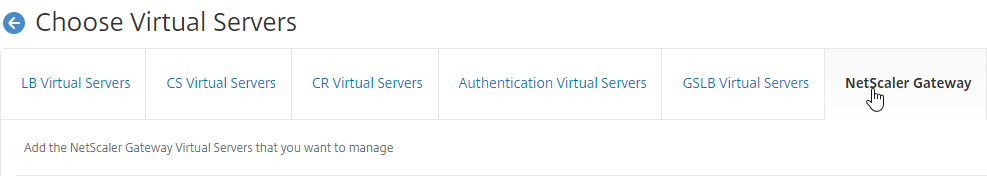
- Select one or more Virtual Servers, and click the Mark Unlicensed button. Only the licensed Virtual Servers are listed.
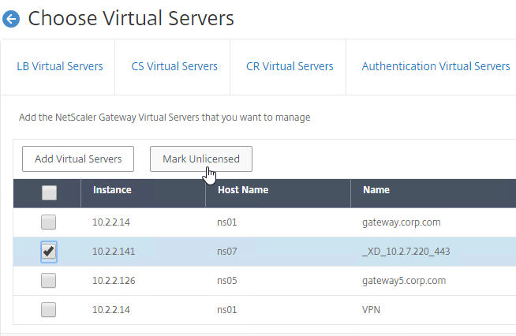
- Click Yes when asked to mark unlicensed.
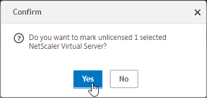
- The unlicensed Virtual Servers won't be removed from the list until you click the Save and Exit or Finish button.
- Back in Choose Virtual Servers, to allocate a license to a Virtual Server, click the Add Virtual Servers button.
- Select the Virtual Server(s) you want to allocate.
- You can use the Search button.
- 12.0 build 57 adds a Throughput column, so you can see how much traffic each vServer is currently handling.
- At the top of the screen, click the blue Select button.
- Click Save & Exit or Finish when done.
Enable AppFlow / Insight
- Go to Networks > Instances > Instance type (e.g. NetScaler VPX).
- Right-click an instance, and then click Enable/Disable Insight.
- At the top of the page are boxes you can check.

- With Load Balancing selected in the View list, right-click your StoreFront load balancer, and click Enable AppFlow. If you don't see your Virtual Server in this list, then you need to assign a license.
- Type in true.
- Select Web Insight.
- If App Firewall is enabled on the vServer, then also select Security Insight.
- HTML Injection injects JavaScript in HTTP responses to measure page load times.
- Click OK.
- Use the View drop-down to select VPN.

- Right-click a NetScaler Gateway Virtual Server, and click Enable AppFlow.

- In the Select Expression drop-down, select true.
- For Export Option, select ICA and HTTP, and click OK. The HTTP option is for Gateway Insight.
- The TCP option is for the second appliance in double-hop ICA. If you need double-hop, then you’ll also need to run
set appflow param -connectionChaining ENABLEDon both appliances. See Enabling Data Collection for NetScaler Gateway Appliances Deployed in Double-Hop Mode at Citrix Docs for more information.
- By default, with AppFlow enabled, if a NetScaler High Availability pair fails over, all Citrix connections will drop, and users must reconnect manually. NetScaler 11.1 build 49 adds a new feature to replicate Session Reliability state between both HA nodes.
- From Session Reliability on NetScaler High Availability Pair at Citrix Docs: Enabling this feature will result in increased bandwidth consumption, which is due to ICA compression being turned off by the feature, and the extra traffic between the primary and secondary nodes to keep them in sync.
- If you still want this feature, on a NetScaler 11.1 build 49 and newer appliance, go to System > Settings.
- On the right, in the Settings section, click Change ICA Parameters.
- Check the box next to Session Reliability on HA Failover, and click OK.

- In a NetScaler 12 instance, at System > AppFlow > Collectors, you can see if the Collector (MAS) is up or not. However, NetScaler uses SNIP to verify connectivity, but AppFlow is sent using NSIP, so being DOWN doesn't necessarily mean that AppFlow isn't working. Citrix CTX227438 After NetScaler Upgrade to Release 12.0 State of AppFlow Collector Shows as DOWN.
- AppFlow (e.g. HDX Insight) information can be viewed in NetScaler MAS under the Analytics node.
Citrix Blog Post - NetScaler Insight Center – Tips, Troubleshooting and Upgrade
Enable Syslog on Instance
MAS can configure Syslog on the NetScaler instances, including sending Syslog to MAS.
Configure Syslog Method:
- Go to Networks > Instances > Instance Type.
- On the right, right-click an instance and click Configure Syslog.
- Uncheck All and check the other boxes. You probably don't want Debug. Click OK.
Configuration Job Method:
- Go to Networks > Configuration Jobs.
- On the right, click Create Job.
- Give the job a name.
- Change the Configuration Source drop-down to Inbuilt Template.
- On the left, drag the NSConfigureSyslogServer blue text to the right side of the screen. Notice that this job uses variables.
- On the bottom, click Next.
- On the Select Instances page, click Add Instances.
- Select one or more instances, and click OK.
- Click Next.
- In the Specify Variable Values page, switch to the Common Variable Values for all instances tab.
- Enter the Syslog server IP address (e.g. MAS IP address). Click Next.
- In the Job Preview page, review the commands it's going to run, and click Next.
- In the Execute page, click Finish.
- The job will eventually say Completed.
MAS Nsroot Password
- In MAS, go to System > User Administration > Users.
- On the right, right-click the nsroot account, and click Edit.
- Check the box next to Change Password and enter a new password.

- You can also specify a session timeout by checking the box next to Configure Session Timeout. Click OK.

Management Certificate
The certificate to upload must already be in PEM format. If you have a .pfx, you must first convert it to PEM (separate certificate and key files). You can use NetScaler to convert the .pfx, and then download the converted certificate from the appliance.
- Go to System > System Administration.

- On the right, in the Set Up NetScaler MAS section, click Install SSL Certificate.
- Click Choose File to browse to the PEM format certificate and key files. If the keyfile is encrypted, enter the password. Click OK.
- Click Yes to reboot the system.

System Configuration
Note: the System Administration page has been rearranged slightly in MAS 12.0 build 53 and newer.
- Go to System > System Administration.
- On the right, modify settings (e.g. Change Time Zone) as desired.
- Click Change System Settings.
- Check the box next to Enable Session Timeout, and specify a value.

- By default, on the Instances page, if you click a blue IP address link, it opens the instance in a new webpage, and logs in using the nsroot credentials. If you want to force users to login using non-nsroot credentials, in Modify System Settings, check the bottom box for Prompt Credentials for Instance Login.

- Check the box next to Enable Session Timeout, and specify a value.
- Configure SSL Settings lets you disable TLS 1 and TLS 1.1.
- Click the Protocol Settings section in the Edit Settings section on the right side of the screen.

- Click the Protocol Settings section in the Edit Settings section on the right side of the screen.
- On the left are Prune Settings.
- System Prune Settings defaults to deleting System Events, Audit Logs, and Task Logs after 15 days. System events are generated by the MAS appliance, which contrasts with Instance events (SNMP traps) that are generated by NetScaler appliances.
- 12.0 build 53 and newer can initiate a purge automatically as the database starts to get full.
- If you click the pencil next to the purge threshold value, you can configure an alarm for when the database gets full.


- To see the current database disk usage, go to System > Statistics.
- Instance Events prune Settings controls when instance SNMP traps are pruned, which defaults to 40 days.

- If you are sending Syslog from instances to MAS, Instance Syslog Purge Settings controls when the log entries are purged. You can even configure different purge intervals for different types of NetScaler Gateway log entries.
- In the right column, under Backup Settings, are additional settings.
- System Backup Settings lets you export MAS backups to an external file server (External Transfer).
- Instance Backup Settings lets you configure how often the instances are backed up. These can also be transferred to External systems.
- There are more settings under System > Analytics Settings.
- ICA Session Timeout can be configured by clicking the link. Two minutes of non-existent traffic must occur before the session is considered idle. Then this idle timer starts.

- MAS 12.0 build 56 lets you configure how the App Score (Application Dashboard) is calculated.

- System > Analytics Settings > Database Summarization lets you configure how long Analytics data is retained. Adjusting these values could dramatically increase disk space consumption. See CTX224238 How Do I Increase Granularity of Data Points Stored on NetScaler MAS Analytics?.
- To see the current database disk usage, go to System > Statistics.
- On the left, click System > NTP Servers.
- On the right, click *Add.*
- Enter an NTP server, and click Create.


- After adding NTP servers, click the NTP Synchronization button.

- Check the box next to Enable NTP Synchronization, and click OK.

- Click Yes to restart.
- Go to System > Auditing > Syslog Servers.
- On the right, click Add.
- Enter the syslog server IP address, and select Log Levels. Click Create.

- You can click Syslog Parameters to change the timezone and date format.

System Email Notifications
- Go to System > Notifications > Email.
- On the right, on the Email Servers tab, click Add.
- Enter the SMTP server address, and click Create.

- On the right, switch to the Email Distribution List tab, and click Add.
- Enter an address for a destination distribution list, and click Create.

- On the left, click System > Notifications.
- On the right, click Change Notification Settings.
- Move notification categories (e.g. UserLogin) to the right.
- Check the box next to Send Email. Select a notification distribution list. Then click OK.
Authentication
- Go to System > Authentication > LDAP.
- On the right, click Add.
- This is configured identically to NetScaler. Enter a Load Balancing VIP for LDAP. Change the Security Type to SSL, and Port to 636. Scroll down.

- Enter the Base DN in LDAP format.
- Enter the bind account credentials.
- Check the box for Enable Change Password.
- Click Retrieve Attributes, and scroll down.

- For Server Logon Attribute, select sAMAccountName.
- For Group Attribute, select memberOf.
- For Sub Attribute Name, select cn.
- To prevent unauthorized users from logging in, configure a Search Filter. Scroll down.

- If desired, configure Nested Group Extraction.
- Click Create.

- On the left, go to System > User Administration > Groups.
- On the right, click Add.
- Enter the case sensitive name of your NetScaler Admins AD group.
- Move the admin Permission to the right.
- The Configure User Session Timeout checkbox lets you configure a session timeout.
- Click Next.

- On the Applications and Templates page, click Create Group. If you are delegating limited permissions, you can uncheck these boxes and delegate specific entities.
- In the Assign Users page, click Finish. Group membership comes from LDAP, so there's no need to add local users.
- On the left, go to System > User Administration.
- On the right, click User Lockout Configuration.
- If desired, check the box next to Enable User Lockout, and configure the maximum logon attempts. Click OK.
- On the left, go to System > Authentication.
- On the right, click Authentication Configuration.
- Change the Server Type to EXTERNAL, and click Insert.
- Select the LDAP server you created, and click OK.

- Make sure Enable fallback local authentication is checked, and click OK.

Analytics Thresholds
- Go to System > Analytics Settings > Thresholds.
- On the right, click Add.
- Enter a name.
- Use the Traffic Type drop-down to select HDX, Web, or Security.
- In MAS 12.0 build 56 and newer, with HDX as the Traffic Type, the Rules section lets you add multiple rules. The other two Traffic Type options only let you specify one rule.
- Use the Entity drop-down to select a category of alerts. What you choose here determines what’s available as Metrics when you click Add Rule. With HDX as the Traffic Type, to add multiple rules for multiple Entity types, simply change the Entity drop-down before adding a new rule.

- Check the box to Enable Alert.
- Check the box to Notify through Email and select an existing Email Distribution List.
- In MAS 12.0 build 56 and newer, if HDX is the Traffic Type, click Add Rule to add a rule.
- Select a Metric, and enter threshold values (e.g. WAN Latency > 200 ms). The available metrics are based on the Entity chosen earlier. Click OK when done.
- In MAS 12.0 build 56 and newer, if HDX is the Traffic Type, you can add multiple rules for multiple Entity types.
- If the Traffic Type is HDX, and the Entity drop-down is set to Users, on the bottom in the Configure Geo Details section, you can restrict the rule so it only fires for users for a specific geographical location.


- On the bottom of the window, click Create.
Geo Map
- Download the Maxmind database from http://geolite.maxmind.com/download/geoip/database/GeoLiteCity.dat.gz.
- Extract the .gz file.

- On the left, go to System > Advanced Settings, and click Geo Database Files.
- On the right, click Upload.
- Browse to the extracted GeoLiteCity.dat file, and click Open.
- You can also define Geo locations for internal subnets. Go to Networks > Sites > Private IP Blocks.
- On the right, click Add.
- Enter a name for the subnet.
- Enter the starting and ending IP address.
- Select a Geo Location (Country, Region, City).
- Click Create.
- On the left, go to Networks > Sites.
- On the right, click Add.
- Give the site a name.
- Click Add IP Block.
- Select one or more IP Blocks, and click Select.
- Click Create.
Instance Email Alerts (SNMP Traps)
You can receive email alerts whenever a NetScaler appliance sends a critical SNMP trap.
- On the left, go to Networks > Events > Rules.
- On the right, click Add.
- Give the rule a name.
- Move Severity filters (e.g. Major, Critical) to the right by clicking the plus icon next to each Severity.

- While scrolling down, you can configure additional alert filters.
- On the bottom of the page, click Add Action.
- Select an Action Type (e.g. Send e-mail Action).

- Select the recipients (or click the plus icon to add recipients).
- Optionally, enter a Subject and/or Message.
- Emails can be repeated by selecting Repeat Email Notification until the event is cleared.
- Click OK.
- Then click Create.
- See the Event Management section at MAS How-to articles at Citrix Docs.
Events Digest :idea:
MAS can email you a daily digest (PDF format) of system and instance events 

To enable the daily digest:
- Go to System > Notifications.
- On the right, click Configure Event Digest Settings.
- Uncheck the box next to Disable Event Digest.
- Configure the other settings as desired, and click OK.
Director Integration
Integrating NetScaler MAS with Director adds Network tabs to Director's Trends and Machine Details views. Citrix Blog Post Configure Director with Netscaler Management & Analytics System (MAS) 
Requirements:
- XenApp/XenDesktop must be licensed for Platinum Edition. This is only required for the Director integration. Without Platinum, you can still access the HDX Insight data by going visiting the NetScaler MAS website.
- Director must be 7.11 or newer for NetScaler MAS support.
- NetScaler MAS must be 11.1 build 49 or newer.
To link Citrix Director with NetScaler MAS:
- On the Director server, run C:\inetpub\wwwroot\Director\tools\DirectorConfig.exe /confignetscaler.
- Enter the NetScaler MAS nsroot credentials.
- If HTTPS Connection (recommended), the NetScaler MAS certificate must be valid and trusted by both the Director Server and the Director user's browser.
- Enter 1 for NetScaler MAS.

- Do this on both Director servers.
Use NetScaler MAS
The AppFlow Analysis tools (e.g. HDX Insight) are located under the Analytics node. See Viewing HDX Insight Reports and Metrics at Citrix Docs.
NetScaler MAS also includes all previous Command Center functionality, which you can find on the Networks nodes. For example, at Networks > Instances, select an instance, and view its Dashboard.
Backups are available by right-clicking an instance, and clicking View Backup.
Networks > Network Reporting > NetScaler let you view Instance performance data.
Dave Bretty Automating Your Netscaler 11.1 Vserver Config Using Netscaler Management and Analytics System: use a Configuration Job to deploy StoreFront load balancing configuration to an instance.
Applications > Dashboard automatically includes all licensed vServers in the Others section. On the top right, click Define Custom App to group vServers together into an application. The grouped vServers are removed from the Others list.
The Applications Node has quite a bit of functionality. See Application Analytics and Management at Citrix Docs for details. 
Link:
- NetScaler MAS How-to Articles at Citrix Docs.
HDX Insight
HDX Insight Dashboard displays ICA session details including the following:
- WAN Latency
- DC Latency
- RTT (round trip time)
- Retransmits
- Application Launch Duration
- Client Type/Version
- Bandwidth
- Licenses in use
HDX Insight can also display Geo Maps. Configure NetScaler MAS with Data Center definitions (private IP blocks). More info at Geo Maps for HDX Insight at Citrix Docs.
Citrix CTX215130 HDX Insight Diagnostics and Troubleshooting Guide contains the following contents:
- Introduction
- Prerequisites for Configuring HDX Insight
- Troubleshooting
- Issues Related to ICA parsing
- Error Counter details
- Checklist before Contacting Citrix Technical Support
- Information to collect before Contacting Citrix Technical support
- Known Issues
Gateway Insight
In the Analytics node is Gateway Insight.
This feature displays the following details:
- Gateway connection failures due to failed EPA scans, failed authentication, failed SSON, or failed application launches.
- Bandwidth and Bytes Consumed for ICA and other applications accessed through Gateway.
- # of users
- Session Modes (clientless, VPN, ICA)
- Client Operating Systems
- Client Browsers
More details at Gateway Insight at Citrix Docs.
Security Insight
The Security Insight dashboard uses data from Application Firewall to display Threat Index (criticality of attack), Safety Index (how securely NetScaler is configured), and Actionable Information. More info at Security Insight at Citrix Docs. 
Troubleshooting
Citrix CTX215130 HDX Insight Diagnostics and Troubleshooting Guide: Syslog messages; Error counters; Troubleshooting checklist, Logs
Citrix CTX224502 NetScaler MAS Troubleshooting Guide 
Citrix Blog Post NetScaler Insight Center – Tips, Troubleshooting and Upgrade
See Citrix Docs Troubleshooting Tips. Here are sample issues covered in Citrix Docs:
- Can’t see records on Insight Center dashboard
- ICA RTT metrics are incorrect
- Can’t add NetScaler appliance to inventory
- Geo maps not displaying
Upgrade NetScaler MAS
- Download the latest Upgrade Package for NetScaler Management and Analytics System. You want the Upgrade Package, not a MAS image.
- Login to NetScaler MAS.
- Go to System > System Administration.
- On the right, in the right pane, click Upgrade NetScaler MAS.
- Browse to the Upgrade Package .tgz file, and click OK.
- Click Yes to reboot the appliance.
- After it reboots, login. The new firmware version will be displayed by clicking your username in the top right corner.